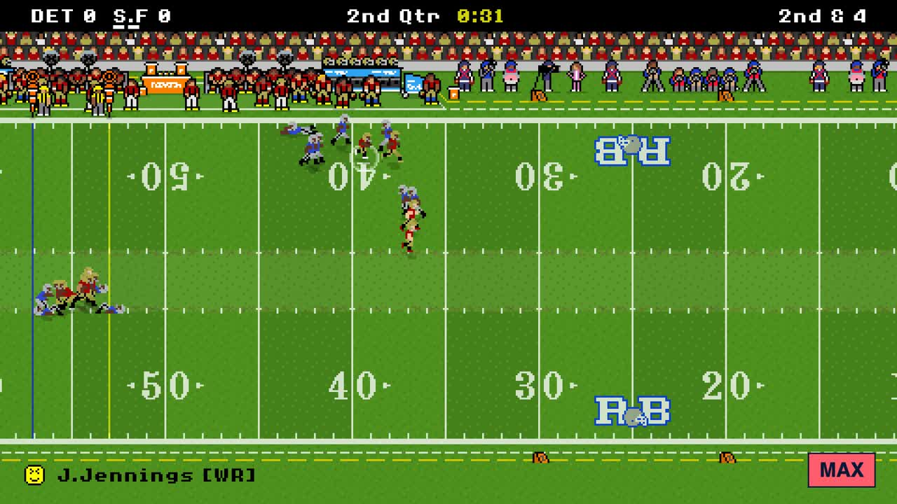

Retro Bowl Multiplayer is Retro Bowl with a real person on the other side of the ball. Both teams are played by humans, each on their own device: your Chromebook or phone runs your offense, theirs runs theirs, and the game goes back and forth online, live, in a normal browser tab. No download, no account, free.
PLAY RETRO BOWL MULTIPLAYER →Works on Chromebook, Windows, Mac, iPhone and Android.

When your opponent has the ball, your screen shows their game live: every throw, juke and tackle as they play it, the same picture they see. When the ball comes back to you, you are playing again. There is no computer running the other team's offense, ever.
Every multiplayer game played to the end on two devices with the same difficulty is ranked. Everyone starts at a rating of 1000. Beat a better player and you climb fast; your first games move your rating the most, and it settles as you play more, like a chess rating. The RANKINGS board on the home page shows the top players.
Every morning the best plays from the day before are picked from every multiplayer game and shown on the home page, with replays: long touchdowns, stiff arms, hurdles and defenders left diving at air.
Does Retro Bowl have multiplayer? The official Retro Bowl by New Star Games is a single-player game. Retro Bowl 2P adds a free, fan-made multiplayer mode: two players, each on their own device, play each other head-to-head online in the browser.
Is Retro Bowl multiplayer free? Yes. It runs in a browser tab with nothing to buy, download or sign up for.
Can I play Retro Bowl multiplayer with random people? Yes. Tap FIND A PLAYER on the home page and you are matched with someone looking for a game. Most players are on weekdays around midday, Central time.
How many players can play? Two, one per team, each on their own phone, Chromebook or computer. Anyone else can watch the game live with WATCH LIVE.
Can I play Retro Bowl multiplayer on a Chromebook at school? Yes. Most games here are played on Chromebooks. If one link is blocked, the unblocked links are the same game, and room codes work across all of them.
Do I need an account? No. You type a display name so your opponent knows who they are playing, and that is all.
Retro Bowl 2P is a free fan-made multiplayer mode. It is not affiliated with or endorsed by New Star Games. The official Retro Bowl is on the App Store, Google Play and Poki. Built by Local Web Tech.